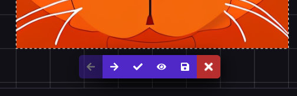
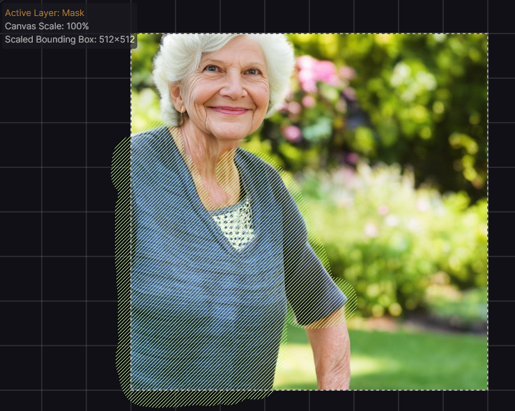
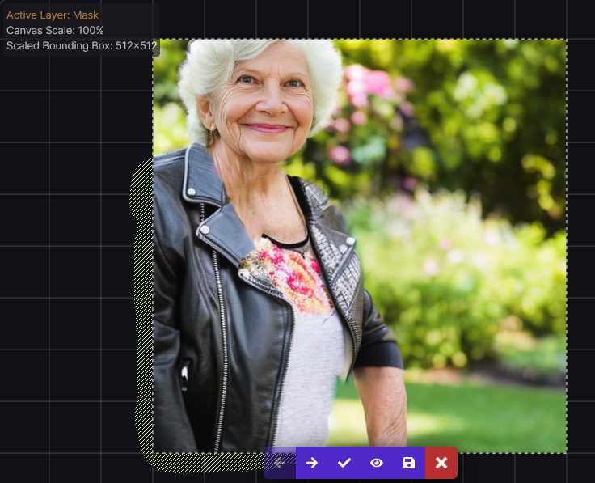
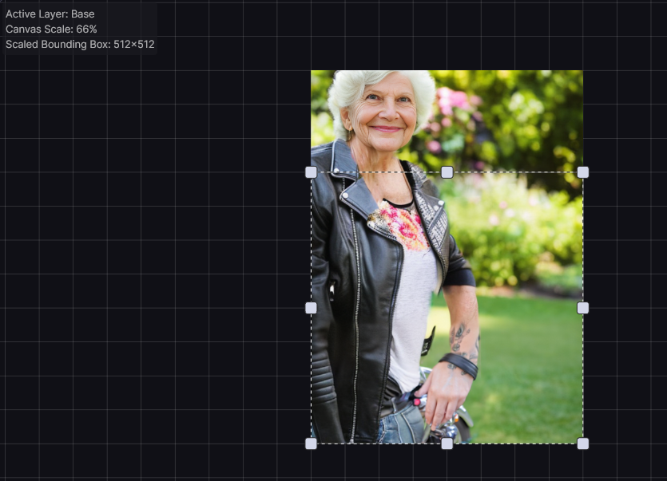

Unified Canvas
The Unified Canvas is a tool designed to streamline and simplify the process of composing an image using Stable Diffusion. It offers artists all of the available Stable Diffusion generation modes (Text To Image, Image To Image, Inpainting, and Outpainting) as a single unified workflow. The flexibility of the tool allows you to tweak and edit image generations, extend images beyond their initial size, and to create new content in a freeform way both inside and outside of existing images.
This document explains the basics of using the Unified Canvas, introducing you to its features and tools one by one. It also describes some of the more advanced tools available to power users of the Canvas.
Basics#
The Unified Canvas consists of two layers: the Base Layer and the Mask Layer. You can swap from one layer to the other by selecting the layer you want in the drop-down menu on the top left corner of the Unified Canvas, or by pressing the (Q) hotkey.
Base Layer#
The Base Layer is the image content currently managed by the Canvas, and can be exported at any time to the gallery by using the Save to Gallery option. When the Base Layer is selected, the Brush (B) and Eraser (E) tools will directly manipulate the base layer. Any images uploaded to the Canvas, or sent to the Unified Canvas from the gallery, will clear out all existing content and set the Base layer to the new image.
Staging Area#
When you generate images, they will display in the Canvas's Staging Area, alongside the Staging Area toolbar buttons. While the Staging Area is active, you cannot interact with the Canvas itself.

Accepting generations will commit the new generation to the Base Layer. You can review all generated images using the Prev/Next arrows, save any individual generations to your gallery (without committing to the Base layer) or discard generations. While you can Undo a discard in an individual Canvas session, any generations that are not saved will be lost when the Canvas resets.
Mask Layer#
The Mask Layer consists of any masked sections that have been created to inform Inpainting generations. You can paint a new mask, or edit an existing mask, using the Brush tool and the Eraser with the Mask layer set as your Active layer. Any masked areas will only affect generation inside of the current bounding box.
Bounding Box#
When generating a new image, Invoke will process and apply new images within the area denoted by the Bounding Box. The Width & Height settings of the Bounding Box, as well as its location within the Unified Canvas and pixels or empty space that it encloses, determine how new invocations are generated - see Inpainting & Outpainting below. The Bounding Box can be moved and resized using the Move (V) tool. It can also be resized using the Bounding Box options in the Options Panel. By using these controls you can generate larger or smaller images, control which sections of the image are being processed, as well as control Bounding Box tools like the Bounding Box fill/erase.
Inpainting & Outpainting#
"Inpainting" means asking the AI to refine part of an image while leaving the rest alone. For example, updating a portrait of your grandmother to have her wear a biker's jacket.
| masked original | inpaint result |
|---|---|
|  |  |
"Outpainting" means asking the AI to expand the original image beyond its original borders, making a bigger image that's still based on the original. For example, extending the above image of your Grandmother in a biker's jacket to include her wearing jeans (and while we're at it, a motorcycle!)

When you are using the Unified Canvas, Invoke decides automatically whether to do Inpainting, Outpainting, ImageToImage, or TextToImage by looking inside the area enclosed by the Bounding Box. It chooses the appropriate type of generation based on whether the Bounding Box contains empty (transparent) areas on the Base layer, or whether it contains colored areas from previous generations (or from painted brushstrokes) on the Base layer, and/or whether the Mask layer contains any brushstrokes. See Generation Methods below for more information.
Getting Started#
To get started with the Unified Canvas, you will want to generate a new base layer using Txt2Img or importing an initial image. We'll refer to either of these methods as the "initial image" in the below guide.
From there, you can consider the following techniques to augment your image:
- New Images: Move the bounding box to an empty area of the Canvas, type in your prompt, and Invoke, to generate a new image using the Text to Image function.
- Image Correction: Use the color picker and brush tool to paint corrections on the image, switch to the Mask layer, and brush a mask over your painted area to use Inpainting. You can also use the ImageToImage generation method to invoke new interpretations of the image.
- Image Expansion: Move the bounding box to include a portion of your initial image, and a portion of transparent/empty pixels, then Invoke using a prompt that describes what you'd like to see in that area. This will Outpaint the image. You'll typically find more coherent results if you keep about 50-60% of the original image in the bounding box. Make sure that the Image To Image Strength slider is set to a high value - you may need to set it higher than you are used to.
- New Content on Existing Images: If you want to add new details or objects into your image, use the brush tool to paint a sketch of what you'd like to see on the image, switch to the Mask layer, and brush a mask over your painted area to use Inpainting. If the masked area is small, consider using a smaller bounding box to take advantage of Invoke's automatic Scaling features, which can help to produce better details.
- And more: There are a number of creative ways to use the Canvas, and the above are just starting points. We're excited to see what you come up with!
Generation Methods#
The Canvas can use all generation methods available (Txt2Img, Img2Img, Inpainting, and Outpainting), and these will be automatically selected and used based on the current selection area within the Bounding Box.
Text to Image#
If the Bounding Box is placed over an area of Canvas with an empty Base Layer, invoking a new image will use TextToImage. This generates an entirely new image based on your prompt.
Image to Image#
If the Bounding Box is placed over an area of Canvas with an existing Base Layer area with no transparent pixels or masks, invoking a new image will use ImageToImage. This uses the image within the bounding box and your prompt to interpret a new image. The image will be closer to your original image at lower Image to Image strengths.
Inpainting#
If the Bounding Box is placed over an area of Canvas with an existing Base Layer and any pixels selected using the Mask layer, invoking a new image will use Inpainting. Inpainting uses the existing colors/forms in the masked area in order to generate a new image for the masked area only. The unmasked portion of the image will remain the same. Image to Image strength applies to the inpainted area.
If you desire something completely different from the original image in your new generation (i.e., if you want Invoke to ignore existing colors/forms), consider toggling the Inpaint Replace setting on, and use high values for both Inpaint Replace and Image To Image Strength.
Note
By default, the Scale Before Processing option — which inpaints more coherent details by generating at a larger resolution and then scaling — is only activated when the Bounding Box is relatively small. To get the best inpainting results you should therefore resize your Bounding Box to the smallest area that contains your mask and enough surrounding detail to help Stable Diffusion understand the context of what you want it to draw. You should also update your prompt so that it describes just the area within the Bounding Box.
Outpainting#
If the Bounding Box is placed over an area of Canvas partially filled by an existing Base Layer area and partially by transparent pixels or masks, invoking a new image will use Outpainting, as well as Inpainting any masked areas.
Advanced Features#
Features with non-obvious behavior are detailed below, in order to provide clarity on the intent and common use cases we expect for utilizing them.
Toolbar#
Mask Options#
- Enable Mask - This flag can be used to Enable or Disable the currently painted mask. If you have painted a mask, but you don't want it affect the next invocation, but you also don't want to delete it, then you can set this option to Disable. When you want the mask back, set this back to Enable.
- Preserve Masked Area - When enabled, Preserve Masked Area inverts the effect of the Mask on the Inpainting process. Pixels in masked areas will be kept unchanged, and unmasked areas will be regenerated.
Creative Tools#
- Brush - Base/Mask Modes - The Brush tool switches automatically between
different modes of operation for the Base and Mask layers respectively.
- On the Base layer, the brush will directly paint on the Canvas using the color selected on the Brush Options menu.
- On the Mask layer, the brush will create a new mask. If you're finding the mask difficult to see over the existing content of the Unified Canvas, you can change the color it is drawn with using the color selector on the Mask Options dropdown.
- Erase Bounding Box - On the Base layer, erases all pixels within the Bounding Box.
- Fill Bounding Box - On the Base layer, fills all pixels within the Bounding Box with the currently selected color.
Canvas Tools#
- Move Tool - Allows for manipulation of the Canvas view (by dragging on the Canvas, outside the bounding box), the Bounding Box (by dragging the edges of the box), or the Width/Height of the Bounding Box (by dragging one of the 9 directional handles).
- Reset View - Click to re-orients the view to the center of the Bounding Box.
- Merge Visible - If your browser is having performance problems drawing the image in the Unified Canvas, click this to consolidate all of the information currently being rendered by your browser into a merged copy of the image. This lowers the resource requirements and should improve performance.
Compositing / Seam Correction#
When doing Inpainting or Outpainting, Invoke needs to merge the pixels generated by Stable Diffusion into your existing image. This is achieved through compositing - the area around the the boundary between your image and the new generation is automatically blended to produce a seamless output. In a fully automatic process, a mask is generated to cover the boundary, and then the area of the boundary is Inpainted.
Although the default options should work well most of the time, sometimes it can help to alter the parameters that control the Compositing. A larger blur and a blur setting have been noted as producing consistently strong results . Strength of 0.7 is best for reducing hard seams.
- Mode - What part of the image will have the the Compositing applied to it.
- Mask edge will apply Compositing to the edge of the masked area
- Mask will apply Compositing to the entire masked area
- Unmasked will apply Compositing to the entire image
- Steps - Number of generation steps that will occur during the Coherence Pass, similar to Denoising Steps. Higher step counts will generally have better results.
- Strength - How much noise is added for the Coherence Pass, similar to Denoising Strength. A strength of 0 will result in an unchanged image, while a strength of 1 will result in an image with a completely new area as defined by the Mode setting.
- Blur - Adjusts the pixel radius of the the mask. A larger blur radius will cause the mask to extend past the visibly masked area, while too small of a blur radius will result in a mask that is smaller than the visibly masked area.
- Blur Method - The method of blur applied to the masked area.
Infill & Scaling#
- Scale Before Processing & W/H: When generating images with a bounding box smaller than the optimized W/H of the model (e.g., 512x512 for SD1.5), this feature first generates at a larger size with the same aspect ratio, and then scales that image down to fill the selected area. This is particularly useful when inpainting very small details. Scaling is optional but is enabled by default.
- Inpaint Replace: When Inpainting, the default method is to utilize the
existing RGB values of the Base layer to inform the generation process. If
Inpaint Replace is enabled, noise is generated and blended with the existing
pixels (completely replacing the original RGB values at an Inpaint Replace
value of 1). This can help generate more variation from the pixels on the Base
layers.
- When using Inpaint Replace you should use a higher Image To Image Strength value, especially at higher Inpaint Replace values
- Infill Method: Invoke currently supports two methods for producing RGB values for use in the Outpainting process: Patchmatch and Tile. We believe that Patchmatch is the superior method, however we provide support for Tile in case Patchmatch cannot be installed or is unavailable on your computer.
- Tile Size: The Tile method for Outpainting sources small portions of the original image and randomly place these into the areas being Outpainted. This value sets the size of those tiles.
Hot Keys#
The Unified Canvas is a tool that excels when you use hotkeys. You can view the full list of keyboard shortcuts, updated with all new features, by clicking the Keyboard Shortcuts icon at the top right of the InvokeAI WebUI.